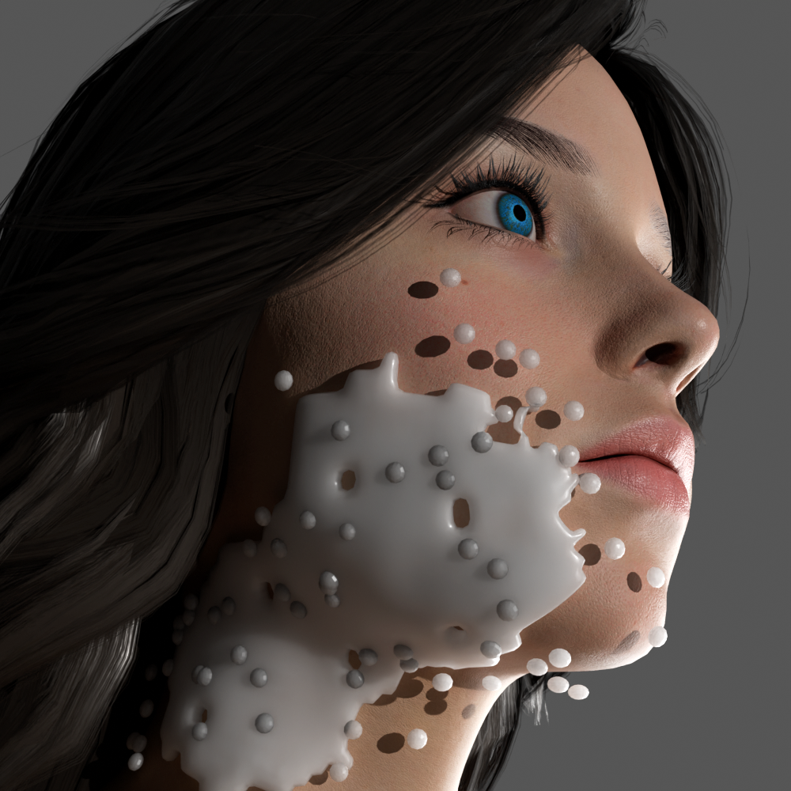
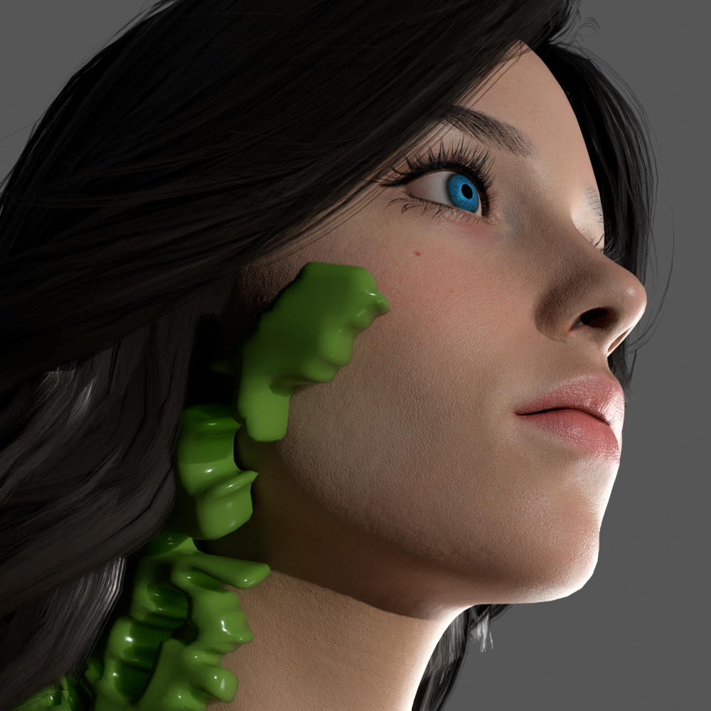
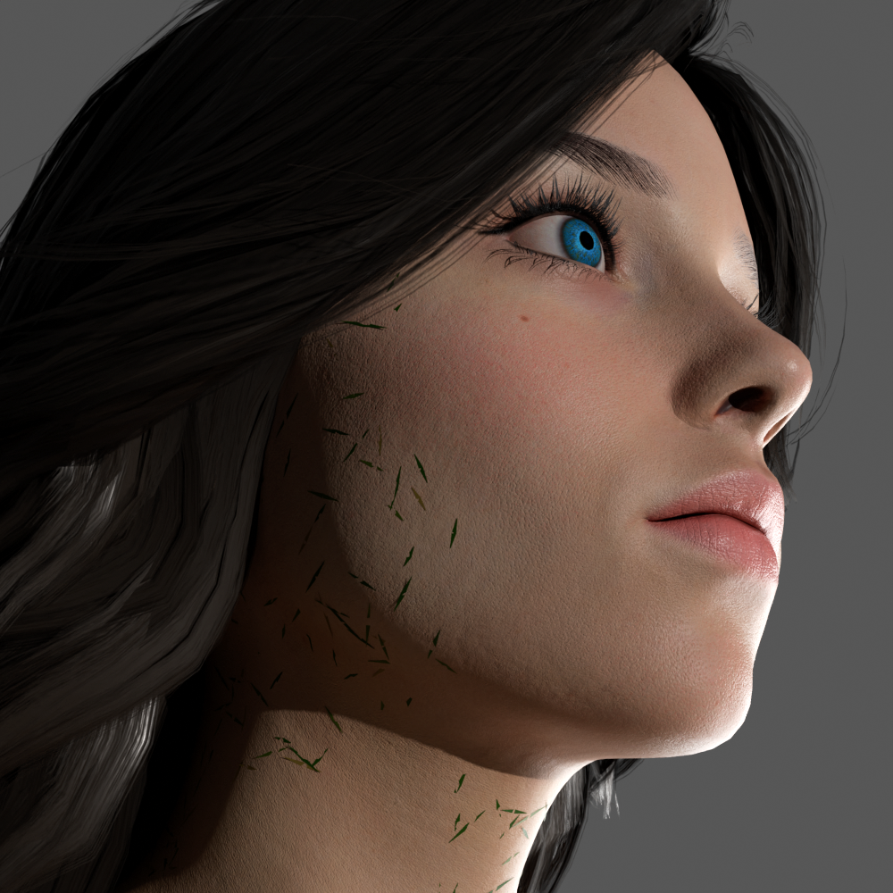
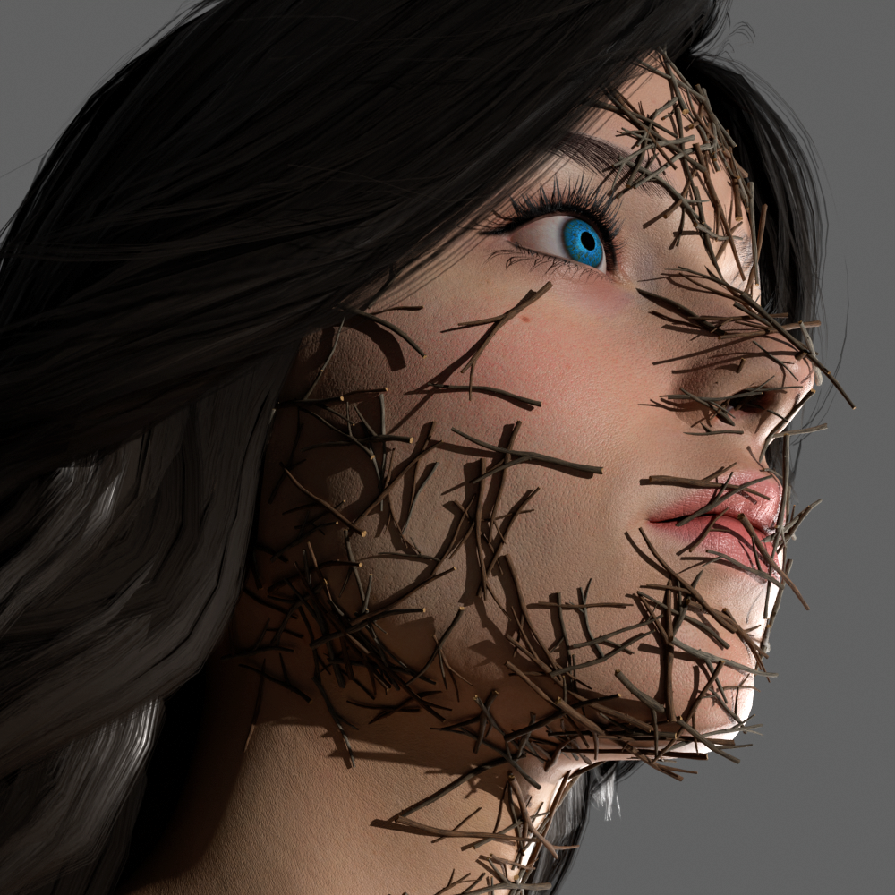
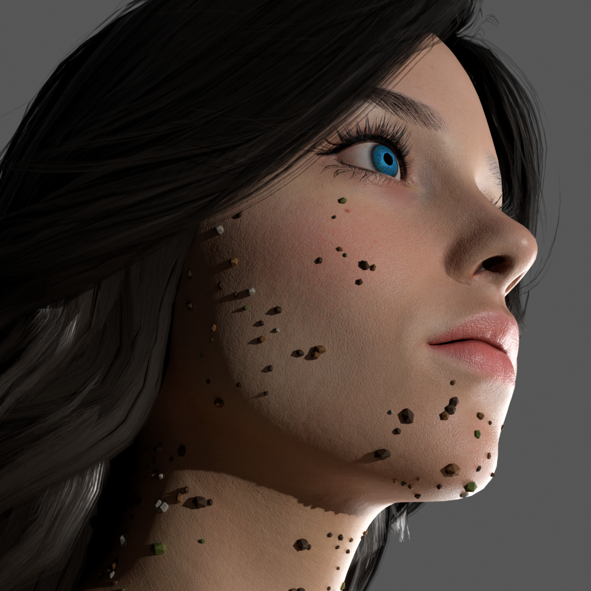
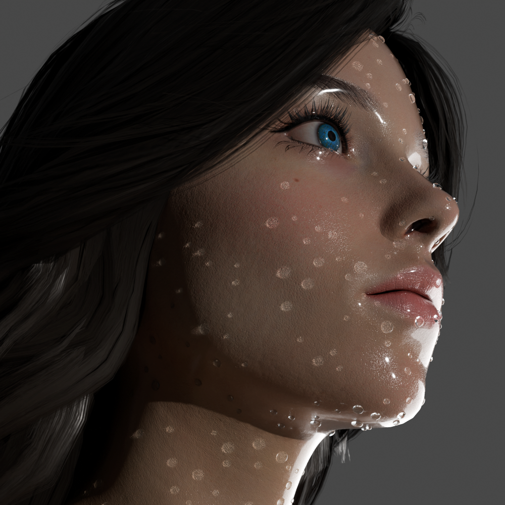
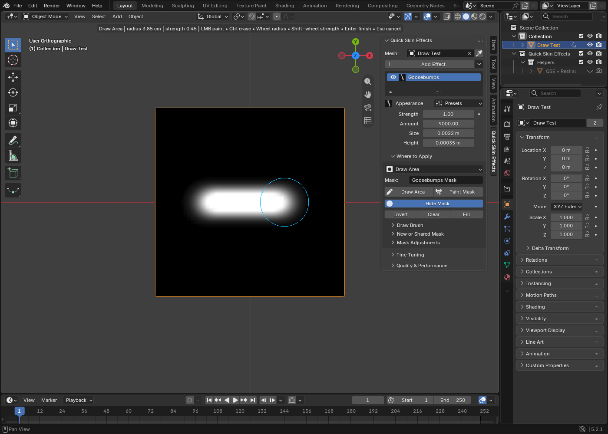

Select your model
Click your character mesh. Move the cursor over the 3D Viewport and press N to open the sidebar. Open Quick Skin Effects and click Use Active Model.
Add water droplets, foam, skin detail and more to your Blender characters. Choose an effect, adjust its settings and paint where it appears.
Designed for Blender 5.2+ · Procedural · Non-destructive stack
Start with a mesh object in Blender. These three steps take you from selecting the model to adjusting an effect.
Click your character mesh. Move the cursor over the 3D Viewport and press N to open the sidebar. Open Quick Skin Effects and click Use Active Model.
Click the effect preview to open the browser. Select an effect, then click Add. Choosing a preview alone does not apply the effect.
Keep Where to Apply → Whole Object for your first try. Adjust the appearance controls. To limit the effect to a small area, choose Draw Area and paint on the model.
Install first: In Blender 5.2 or newer, open Edit → Preferences → Add-ons → Install from Disk. Select the downloaded ZIP without extracting it, then enable Quick Skin Effects.
Add surface details without building each effect from scratch. Each effect stays in its own editable layer, so you can combine several looks and adjust them separately. Use a mask — a painted area that controls visibility — to keep details exactly where you want them.
Each effect has its own character. Combine them, tune their settings and use masks to decide exactly where they belong.
Add tiny raised skin bumps and fine shading detail.
Rounded beads with an adjustable water tint and spacing.
Add wrinkle and fold detail to the skin material.
Blend roughness, color and coat for a fresh, dewy look.

Cover selected areas with foam and optional larger bubbles.

Create a covered area or bind a streak to a guide curve.
Scatter small sand grains across the skin or a painted area.

Add short green blades that follow the surface.

Curved, forked natural forms with optional custom assets.

Scatter small debris pieces. Adjust their amount, size and how closely they gather in groups.

Guide surface flow or bake particles for playback and rendering inside your Blender scene.
Open Where to Apply in the effect panel. A mask controls which areas receive the effect. Start with Whole Object, then try Draw Area when you want more control.

Choose a mode in the Flowing Water panel. Guided Flow moves beads along a curve you create. Surface Flow calculates particle motion on the model and saves it in a baked cache.
Flowing Water is a controllable surface-particle effect, not a full fluid solver. It does not simulate splashes, particle merging or liquid volumes.
Create a curve with one Poly spline. Assign it in Guide Curve, click Bind Guide to Skin, adjust Flow Speed and play the timeline.
Choose Surface Flow, set the start and end frames, then click Bake Surface Flow. Match viewport and render quality and turn off Performance Mode before baking.
For Guided Flow, rebind after changing the guide or mesh structure. For Surface Flow, bake again after changing simulation settings.
A quick guide to compatibility, model setup and where to find help.
This release uses Blender's current Geometry Nodes and add-on APIs.
Surface attachments rely on a stable mesh. Avoid remeshing or reordering vertices after adding effects.
These effects need node-based materials with a direct Principled BSDF to Surface connection in every material slot.
Goosebumps shader detail is easiest to judge in Material Preview or Rendered mode. Geometric silhouette detail needs enough mesh resolution.
Need more detail? The included guide explains masks, effect controls, guides and baking step by step.
In Blender, open Edit → Preferences → Add-ons, choose Install from Disk and select the downloaded ZIP without extracting it. Enable the add-on, select a mesh, then open the N-panel and choose Quick Skin Effects.
No. The preview opens the effect browser. Choose a look and click Add to put the effect on the selected model.
Yes. Effects are separate layers in the stack. Choose an existing mask to let multiple effects share the same coverage; edits to that shared mask update each linked effect.
They blend into the existing skin shader. Each material slot needs a node-based material with a direct Principled BSDF connected to the Material Output Surface.
No. Guided Flow moves beads along a curve; Surface Flow uses a baked particle cache. Neither mode simulates splashes, merging droplets or liquid volumes.
Install once, then work directly in Blender's Quick Skin Effects panel.
MambaCG on Superhive